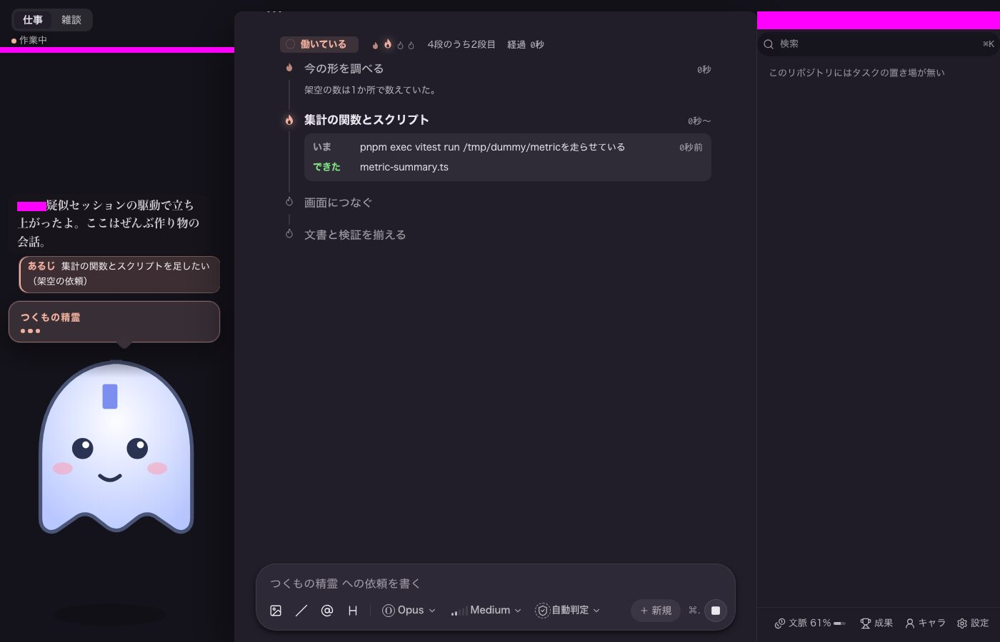

2026-11-15 に戻した器（舞台と紙）の紙の頭にあったプログレス、つまり判定の札・灯りの並び・「4段のうち2段目」・計画の一覧を土台にした1案。今の3列の器の進行の帯をこの形に育て、走っている手順を今の段の行の中の枠へ入れる。流れの末尾のいまの行と「手順 n件」の口は無くなり、最新のセリフのすぐ下が入力欄になる。
戻す前の画の回帰の画（1400×900）。紙の頭に判定の札と灯りの並びと「4段のうち2段目」があり、その下の計画の一覧で、今の段の行の中に「いま」「できた」の枠が開いていた。セリフは左の舞台にあり、紙とは混ざらない。

戻した器では、セリフは左の舞台、進行は紙と、置き場が分かれていた。今の器ではセリフも中間レポートも中央の流れにあるので、同じことを2か所で言わないよう中身を分け直した。
| 戻した器 | 練った案 | わけ | |
|---|---|---|---|
| 置き場 | 紙の頭（中央の列の上端） | 今の進行の帯の位置（中央の列の上端） | 帯の位置は変えないので、流れ・入力欄・立ち絵・やり取りの列は今のまま |
| 判定の札 | 字の記号（◌ ● ■ ✕）と語 | 描いた点・印と語（働いている・背景で働いている・あなたの番・あなたが止めた・完了） | 止めたやり取りで帯が「完了」と言う今の食い違いも、ここで消える |
| 灯りと位置の語 | 狐火の並び・「4段のうち2段目」・経過 | 同じ | 利用者が気に入っていた形をそのまま使う。炎の形は成果の画面の灯りと同じ |
| 計画の一覧 | 済んだ段の下に要約 | 済んだ段は名前・所要・「手順 n」だけ | 要約は流れの中間レポートだけが持つ（同じ情報は1か所） |
| 今の段の枠 | いま・できた・任せた・止まって見える | いま・できた・任せた。「いま」の文は今の動詞・対象・経過。長く掛かったら「長く掛かっている」 | 止まって見えるときの言い方は、今の規則（ADR 0062 論点 3）を使う |
| 回る印 | 判定の札と枠の2か所 | 「いま」の行の頭の1個だけ（steps()） | 動くものを1つに絞る今の決まりを保つ |
| 離れて戻ったとき | 紙の頭のまとめの文と、一覧の既読の印 | 流れの境目の線（今のまま）と、帯の「見ていない間に済んだ」の札・灯りの点 | まとめの文は境目の線が言うので、帯は印だけにする |
| 終わったあと | 紙の末尾に「この結論に至った道筋」 | 帯が判定の行1行に畳まれ、「道筋」で一覧を開ける | 最終レポートが流れの頭から読める |
| 道具の手順 | 無し | 済んだ段の「手順 n」で、その段の手順を同じ動詞で開く | 「手順」の一覧（ADR 0059 論点 3）の役目を引き継ぐ |
見本の働く場面（1400×900。括弧は 1920×1080）で測った。今の形の数は compare.html と同じ測り方。
| 今の形 | 練った案 | |
|---|---|---|
| 走っている手順の置き場 | 流れの末尾（最新のセリフの 12px 下） | 帯の中の、今の段の行の枠 |
| 流れの高さ | 631px（811px） | 454px（634px）。畳むと 538px（718px） |
| 最新のセリフと「いま」の距離 | 58px | 527px（「いま」は上端の帯の中） |
| 上へ送って読み返すとき | 手順が見えない | 帯ごと残る |
| これからの段の名前 | 「手順」を開くと読める | 開かずに読める |
| 止めたとき | 帯の札が緑の「完了」 | 「あなたが止めた」「4段のうち2段目で止めた」 |
| 委譲を待つとき | 「背景で」を帯と末尾の行の2か所で言い、生きているかは秒だけで分かる | 任せた役の最後の報せ「1分前」と、委譲先の走っている手順「4秒」 |
| 答え待ちを言う所 | 帯の札・入力欄の上の知らせ・お伺いの3か所 | 帯の判定とお伺いの2か所。お伺いが見えているあいだは入力欄の上の知らせを出さない（ADR 0059 論点 5 の決まりどおり） |
| 離れて戻ったとき | 流れの境目の線 | 境目の線と、帯の「見ていない間に済んだ」 |
フェーズ 2/4 で、ファイルを書き換えている。
回る印を遅くして「長く掛かっている」を添える規則は今のまま。練った案では、その段で書き終えたファイルも「できた」の行に出る。
働く（後半）で、流れを上端まで送った。
委譲先の手順の始まりと終わりは、今も画面に届いている（workflow-step-started・workflow-step-finished）。練った案はそれを「いま」の行に出し、任せた役の最後の報せを「任せた」の行に出す。
お伺いのカードは流れの末尾のまま。練った案では、帯の判定が「あなたの番」になり、今の段の行に「質問 1件 ↓」の札が付く。
今の形は、流れの札が「止めた」と言うのに、帯の札は緑の「完了」と言い、2段目の丸も「今」の枠のまま残る。
境目の線は今のまま。練った案では、見ていない間に済んだ段に札が付き、帯の灯りにも小さな点が付く。
練った案の帯は、終わると判定の行1行（42px）に戻る。「道筋」で計画の一覧を開ける。
練った案は「手順」の口を持たず、済んだ段ごとに「手順 n」で開く。帯の「畳む」で、今の段の行だけを残す（133px）。
中くらいの幅（1000×800）と広い幅（1920×1080）。帯の幅は流れと同じ（上限 976px）で、長い対象は行の中で省く。
steps() で回し、ADR 0058 論点 9 の負荷の上限（止まった画面で、ぼかし無しの版と CPU が 2 倍以内）を測り直す。動き